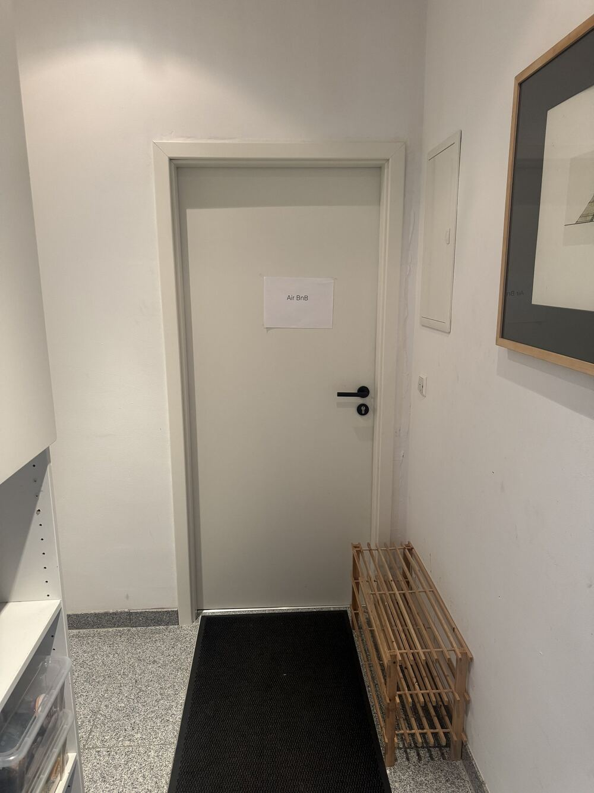
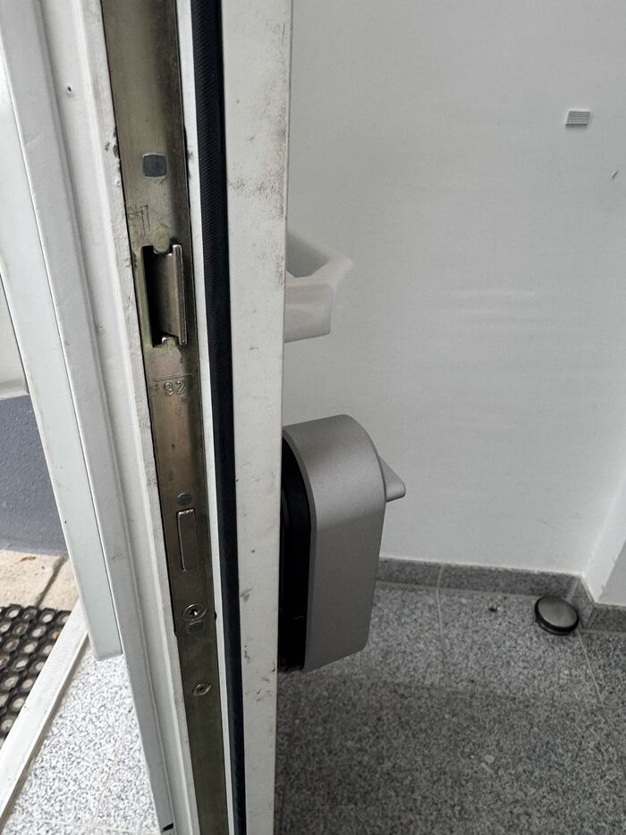

Cíťte sa prosím ako doma! Chceme, aby ste sa u nás mali skvele, preto sme tu zhrnuli najdôležitejšie informácie. S otázkami alebo podnetmi sa na nás kedykoľvek obráťte – užite si Fellbach!
Anita & Johannes
📄 PDF sprievodca (nemecky/anglicky)Príchod & check-in
Apartmán sa nachádza v zadnom dome (Bruckstraße 22/1). K príjazdu, parkovaciemu miestu a vchodu sa dostanete zozadu cez ulicu Bruckwiesenweg 12 – nie z Bruckstraße.
📍🅿️ Cieľ navigácie: Bruckwiesenweg 12Ako k nám
- Choďte po Bruckstraße a na rohu s červeným domom (reštaurácia Da Patrizia) odbočte do ulice Bruckwiesenweg.

Autom: Bruckstraße (hore) → Bruckwiesenweg → parkovisko (červená čiara) - Pokračujte po Bruckwiesenweg, kým sa nestočí doľava. Za zákrutou uvidíte vľavo červenú budovu s dvoma bielymi garážovými bránami. Parkovanie: zaparkujte na dláždenej ploche pred ľavou bránou dvojgaráže (vedľa obytného auta) – túto bránu smiete úplne zablokovať. Pravá garážová brána musí zostať vždy voľná.

Bruckwiesenweg: červená budova s dvoma bielymi garážami - Vpravo od garáží je kovová brána so strieškou.

Brána vpravo od garáží - Kovová brána je otvorená – jednoducho prejdite. Ďalej pokračujte pešo po dláždenom chodníku popri bielom dome, okolo vyvýšených záhonov, až k bielym vchodovým dverám so schodmi a sklenenou strieškou.

Chodník popri dome k dverám 
Biele vchodové dvere so sklenenou strieškou - Klávesnica Yale je vpravo hore na vchodových dverách: dotknite sa klávesnice, aby sa rozsvietila → zadajte svoj osobný kód → potvrďte zeleným ✓ → stlačte kľučku. Kód nájdete v aplikácii Airbnb pri svojej ceste (pokyny k príchodu); platí iba počas vašej rezervácie.

Klávesnica Yale: zadať kód, potvrdiť ✓ - Priamo v chodbe sú dvere s tabuľkou „Air BnB“ – to je váš apartmán. Pri príchode je kľúč v zámke.

V chodbe: dvere „Air BnB“


Pohľad zhora

Autobusom & vlakom: pozri doprava. Autobusová zastávka Cannstatter Platz je len pár minút chôdze.
Wi-Fi
Apartmán & domový poriadok
- V celom apartmáne je zákaz fajčenia.
- Žiadne večierky ani podujatia.
- Nočný kľud od 22:00 do 7:00 – prosíme o ohľaduplnosť aj na dvore a cestou k autu.
Dobré vedieť
- Kúrenie & vetranie: radiátory nastavíte termostatom (stupeň 3 ≈ 20 °C). V zime prosím vetrajte krátko, ale intenzívne (okno dokorán na 5 minút), namiesto trvalo vyklopeného okna.
- Káva: na rannú kávu je pripravený kávovar Senseo. Zvyčajne vám necháme pár vankúšikov na začiatok – pri dlhšom pobyte si najlepšie kúpte balenie pri nákupe (dostanete v každom supermarkete).
- Odpad: odpad môžete pri odchode jednoducho nechať v apartmáne – postaráme sa oň.
- V nedeľu sú v Nemecku všetky supermarkety zatvorené – nakúpte najlepšie v sobotu.
Nákupy, pekárne & jedlo
★ = hodnotenie Google (počet recenzií) z nášho prieskumu – aktuálne hodnotenia a otváracie hodiny nájdete pod „Mapa“. Vzdialenosti od apartmánu.
Supermarkety & drogéria


Pekárne


Jedlo & pitie


Naše tipy – priamo pre vás
Pre rodiny
Jedna z najkrajších zoologických záhrad v Nemecku s mnohými pavilónmi a skleníkmi – skvelý výlet aj v zime alebo za dažďa.
Krytý bazén so šmykľavkami, saunou a novým svetom džungle pre najmenších (otvorený v lete 2026). Vonkajšie kúpalisko je v zime zatvorené.
Rovinatý bezbariérový okruh (cca 4 km) vinicami – ľahko s kočíkom, s výhľadom na Fellbach.
Pre páry
Vínna cesta (cca 4,3 km) začína pri Neue Kelter fellbašských vinárov (Kappelbergstraße 48) a vedie vinicami k vyhliadke „Blick über Fellbach“. Každú prvú sobotu v mesiaci sa tam koná verejná degustácia.
Klasicistická kaplnka nad vinicami ponúka jeden z najkrajších výhľadov do údolia Neckaru. Samotná kaplnka je od novembra do marca zatvorená – prechádzka a výhľad sa však oplatia celý rok.
Teplá minerálna voda vo vnútorných aj vonkajších bazénoch a sauna – nádherne relaxačné, najmä v zime.
Esslingen s hrázdeným starým mestom a hradom (cca 20 min) alebo rezidenčný zámok Ludwigsburg, jeden z najväčších barokových zámkov Nemecka (cca 25 min, v zime s prehliadkami).
Pre cestovateľov sólo & pracovne
Zo stanice Fellbach idete linkou S2 alebo S3 asi 12–15 minút na hlavnú stanicu v Stuttgarte – Schlossplatz, Königstraße, tržnica a Staatsgalerie sú potom na dosah pešo.
Dve povinné zastávky pre milovníkov áut, každé zvládnete za 2–3 hodiny. Obe sú v pondelok zatvorené; Múzeum Porsche je navyše od 18. 1. do 1. 2. 2027 zatvorené pre rekonštrukciu.
Prvá televízna veža na svete zo železobetónu – skvelá aj po práci: denne 10–22, posledný vstup 21:30.
Okruh cez Kappelberg vinicami a lesom k rozhľadni – cca 13,7 km, asi 4 hodiny. V zime vyrazte skoro (okolo 17:00 je tma) a pozor na poľadovicu v lese.
Podujatia vo Fellbachu & okolí
Stav k 22. 11. 2026 · bez záruky – pred návštevou si prosím overte u organizátora.
- 28. 11.–22. 12. 2026Vianočné trhy vo Fellbachu
Okolo Lutherkirche a radnice, s pódiom a programom pre deti. Po–st 16–20, št–ne 12–20, vstup voľný (koniec predpokladaný 22. 12.).Centrum Fellbachu - 25. 11.–23. 12. 2026Vianočné trhy v Stuttgarte
Jedny z najstarších a najväčších vianočných trhov v Európe, asi 250 stánkov. Ne–št 11–21, pi & so 11–22.Centrum Stuttgartu · cca 15 min S-Bahnom - 24. 11.–22. 12. 2026Stredoveké & vianočné trhy v Esslingene
Ne–št 11–20:30, pi & so 11–21:30.Esslingen am Neckar · cca 20 min - 24. 11.–22. 12. 2026Barokové vianočné trhy v Ludwigsburgu
Asi 150 stánkov v barokovej kulise, denne 11–21.Ludwigsburg · cca 25 min - do začiatku/polovice januára 2027Christmas Garden vo Wilhelme
Svetelná cesta historickým parkom, večer. Vstupenky online (christmas-garden.de).Stuttgart-Bad Cannstatt - každú 1. sobotuVerejná degustácia – Fellbacher Weingärtner
Ďalšie termíny: 5. 12. 2026, 2. 1., 6. 2. a 6. 3. 2027.Neue Kelter, Kappelbergstraße 48, Fellbach - 20. 1. 2027 · 20:00„Huckleberry Finn“ s Herbertom Knaupom (v nemčine)Schwabenlandhalle Fellbach
- 7. 2. 2027 · 19:00Labutie jazero – Grand Classic BalletSchwabenlandhalle Fellbach
- 20.–21. 2. 202729. vinársky veľtrh „Die Besten aus dem Remstal“
Asi 50 vinárstiev počas jedného víkendu.Alte Kelter, Kelterweg 7, Fellbach - 13. 3. 2027 · 20:00Azzurro – italo-popová revueSchwabenlandhalle Fellbach
- 20. 3. 2027Bobby & Max – živá rozhlasová hra pre deti, v nemčine (13:00 & 18:00)Schwabenlandhalle Fellbach
Autobusom & vlakom
- Autobus: zastávka Fellbach Cannstatter Platz (pár minút pešo) – autobusy okrem iného na stanicu.
- S-Bahn: stanica Fellbach – S2 a S3 na hlavnú stanicu Stuttgart (cca 12–15 min), letisko/výstavisko a smer Schorndorf alebo Backnang. Najpohodlnejšie spojenie do Stuttgartu.
Cestovné poriadky a lístky: aplikácia VVS alebo DB Navigator – ukazujú aj aktuálne výluky. Deutschlandticket platí v celej regionálnej doprave.
🚗 Stuttgart je nízkoemisná zóna: autá potrebujú zelenú plaketu („Umweltplakette“).
Vyhľadanie spojenia VVS ↗Odchod
Check-out do 11:00. Pred odchodom prosím:
Dúfame, že sa vám u nás páčilo! Veľmi nás poteší vaše hodnotenie na Airbnb. ⭐
Kontakt & núdzové situácie
Najrýchlejšie nás zastihnete cez aplikáciu Airbnb alebo telefonicky:
Tiesňové čísla
- Hasiči & záchranná služba: 112
- Polícia: 110
- Lekárska pohotovosť: 116 117
- Pohotovostná lekáreň: aponet.de – vyhľadanie lekárne